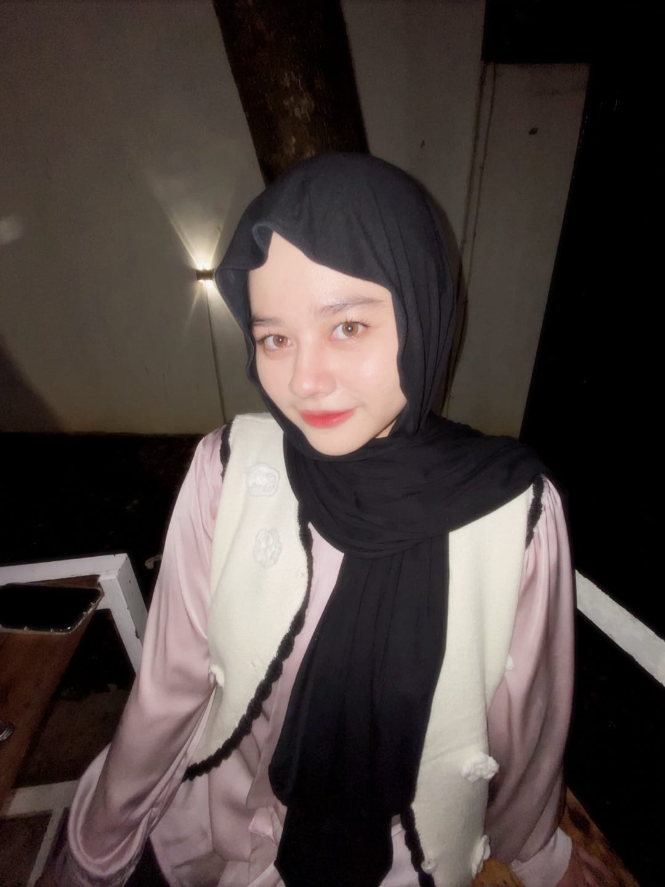

Saving Lives
Menciptakan dunia tanpa kelaparan
Tentang Saving Lives
Zero Hunger adalah tujuan ke-2 dari Tujuan Pembangunan Berkelanjutan (Sustainable Development Goals - SDGs) yang ditetapkan oleh PBB. Tujuan ini berfokus pada pemberantasan kelaparan, pencapaian ketahanan pangan, perbaikan nutrisi, dan promosi pertanian berkelanjutan.
Dengan lebih dari 820 juta orang di dunia mengalami kelaparan, penting bagi kita untuk bersama-sama bekerja demi dunia yang lebih baik, di mana semua orang memiliki akses terhadap makanan yang bergizi.
Tujuan Kami
- Mengakhiri semua bentuk kelaparan pada tahun 2030.
- Meningkatkan akses ke makanan bergizi untuk semua orang.
- Memastikan keberlanjutan dalam produksi pangan.
Tim Kami
Satria Bima Anggara

Alya Latifa